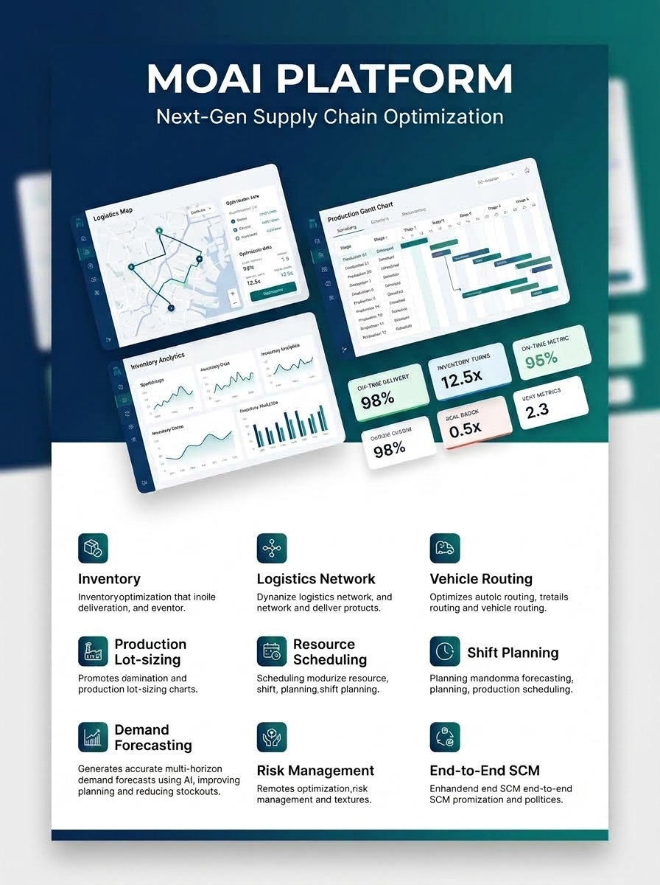
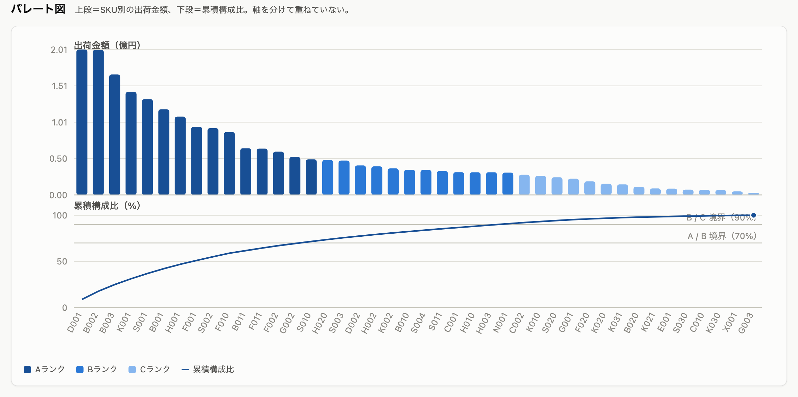
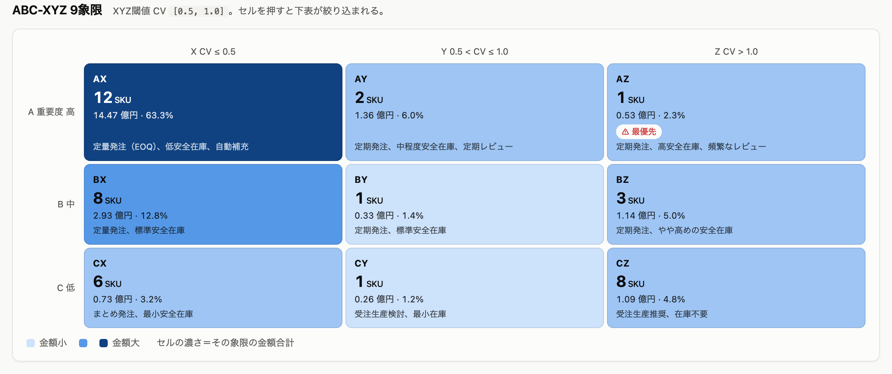
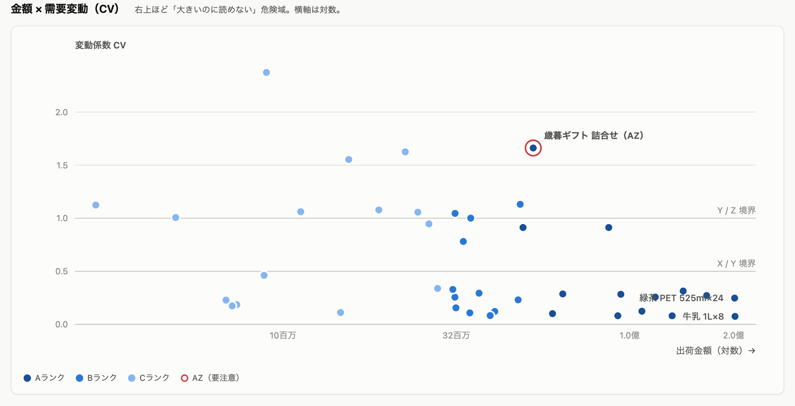
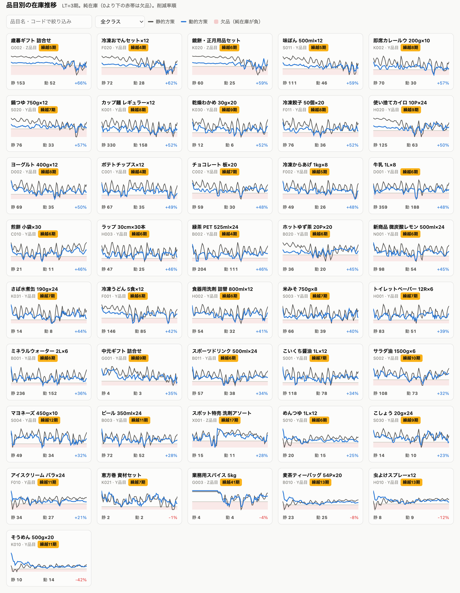
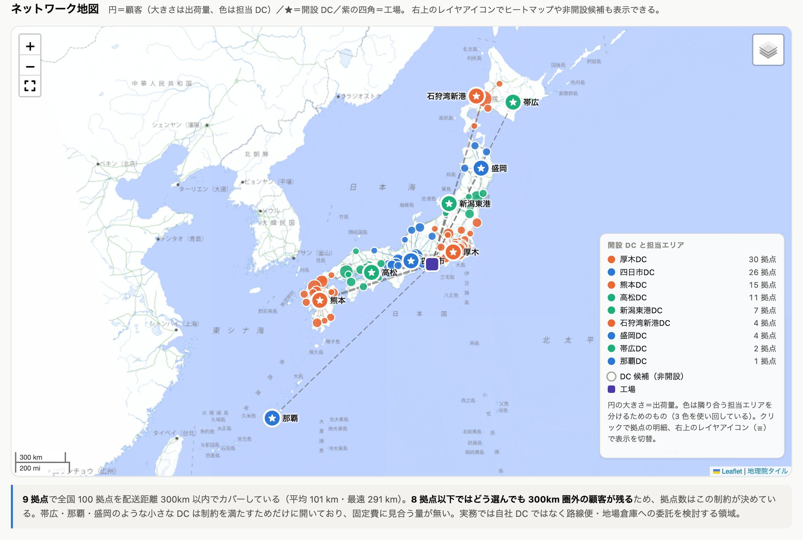
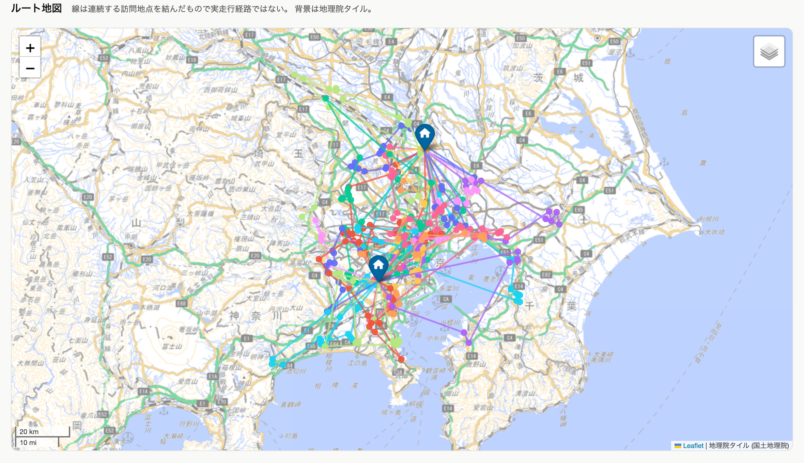
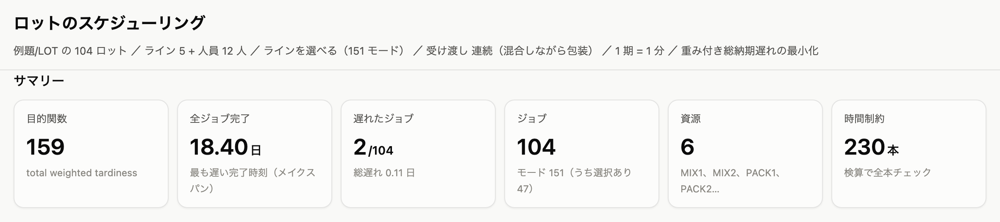
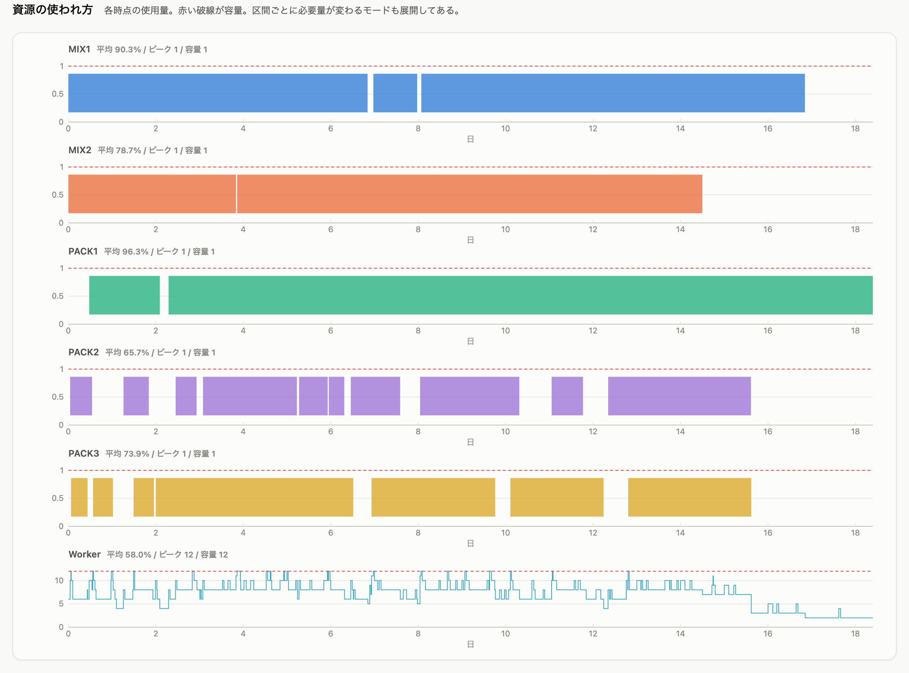

AIエージェントに「解いて」と伝えるだけ。需要予測から在庫45%削減、拠点配置、ラストワンマイル配車、生産ガントチャートまで——15の数理最適化スキルが連動し、現場の計画業務と全社コストを劇的に革新します。

従来の属人的なExcelや縦割りの高額パッケージでは解決できなかった、サプライチェーンの構造的トレードオフをAIエージェントが解消します。
各業務領域の分析結果が、次のプロセスの最適化入力へと直接つながる「統合ビジネスプランニング（IBP）の連鎖」を体験してください。
需要は平坦・季節性・散発の3つに分かれます。ABC分析（金額）とXYZ分析（変動性）を掛け合わせると、AX象限だけで売上金額の63%を占める一方、AZ象限が最優先でケアすべき要注意SKUであることが浮き彫りになります。



静的な安全在庫方策を計算すると、安全在庫の実に46%が需要のばらつき吸収のためだけに積まれていることが判明します。
そこで機械学習による日次需要予測を導入。予測誤差の標準偏差σは実需のσの約半分（全SKU合計0.22）まで縮小します。この予測値を動的在庫方策（dynamic-inventory）に直結させることで、在庫金額を45%削減しながら欠品も低減させる劇的な成果を生み出します。

適正化された在庫を配置する物流センター（DC）の場所と数を決定します。翌日配送リードタイムとして「配送距離300km以内」という制約を課すと、最適拠点は9箇所に定まります。
ここで極めて重要なトレードオフが判明します。物流総費用の最大項目はトラック配送費ではなく、DC固定費（全体の45%）だったのです。拠点を増やせば配送距離は縮みますが、拠点固定費と分散在庫が膨らむという構造を数理モデルが明かします。

最適配置された9拠点を起点に、日々の顧客注文を配送するトラックルートを決定（VRP）。
各店舗の荷受け時間枠（午前中指定など）、車両の積載重量制限、大型車進入規制、実道路の所要時間行列をすべて加味し、わずか数秒で総走行距離・走行時間を最小化するルートを出力します。配送ルートはインタラクティブな地図HTMLで即座にドライバーや配車係へ共有可能です。

サプライチェーンは物流だけでは完結しません。多段部品表（BOM）を遡って調達先途絶リスク（TTR/TTS）をヘッジし、生産ラインの段取り替えを最小化するロットサイズを立案。
さらに日々の設備ガントチャート作成、スタッフの勤務表（シフト表）の自動作成、拠点間幹線輸送のハブ積替えダイヤグラムまで、すべて同じ数理思想で直結します。


貴社の事業規模・在庫状況を入力すると、Agent Skillsの導入によって得られる在庫削減額、キャッシュフロー改善効果、推奨スキル連鎖を即座に試算します。
計画担当者がエージェントにどう指示を出し、スキルがどう自律計算して結果を返すかを体感してください。
サプライチェーンのあらゆる意思決定課題に対応する、検証済みの自律数理最適化スキル群です。カードをクリックすると詳細を表示します。
貴社の社内データを用いた2週間の概念実証（PoC）から、実業務への本格定着まで伴走支援します。
現状の需要データ、配送先データ、生産条件等のフォーマットを確認し、どのスキル連鎖が最大効果を生むか無償診断します。
貴社の実データで最適化計算を実行。従来の計画と比較した在庫削減額・配送効率・稼働率向上をダッシュボードで可視化します。
Claude Code / Antigravity / 社内セキュアLLMと連携するMCPサーバーを構築。機密データを社外に出さないセキュア環境を実現。
現場の計画担当者向けハンズオントレーニングを実施。日々の業務プロンプト運用と数理検算フローを完全に自走化します。
「自社の在庫データでどれくらい削減できるか知りたい」「配車計画を自動化したい」など、まずはお気軽にご相談ください。SCM最適化のエキスパートが要件を整理し、最適なスキルの組み合わせをご提案します。